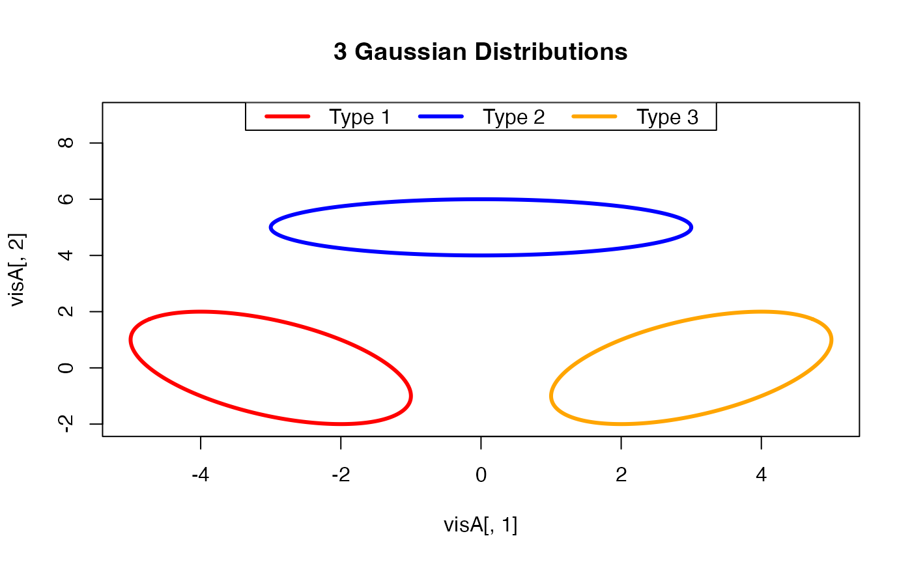

Sampling from a Bivariate Gaussian Distribution for Visualization
gaussvis2d.RdThis function samples points along the contour of an ellipse represented
by mean and variance parameters for a 2-dimensional Gaussian distribution
to help ease manipulating visualization of the specified distribution. For example,
you can directly use a basic plot() function directly for drawing.
Examples
# \donttest{
#----------------------------------------------------------------------
# Three Gaussians in R^2
#----------------------------------------------------------------------
# MEAN PARAMETERS
loc1 = c(-3,0)
loc2 = c(0,5)
loc3 = c(3,0)
# COVARIANCE PARAMETERS
var1 = cbind(c(4,-2),c(-2,4))
var2 = diag(c(9,1))
var3 = cbind(c(4,2),c(2,4))
# GENERATE POINTS
visA = gaussvis2d(loc1, var1)
visB = gaussvis2d(loc2, var2)
visC = gaussvis2d(loc3, var3)
# VISUALIZE
opar <- par(no.readonly=TRUE)
plot(visA[,1], visA[,2], type="l", xlim=c(-5,5), ylim=c(-2,9),
lwd=3, col="red", main="3 Gaussian Distributions")
lines(visB[,1], visB[,2], lwd=3, col="blue")
lines(visC[,1], visC[,2], lwd=3, col="orange")
legend("top", legend=c("Type 1","Type 2","Type 3"),
lwd=3, col=c("red","blue","orange"), horiz=TRUE)

par(opar)
# }